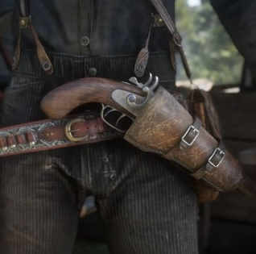
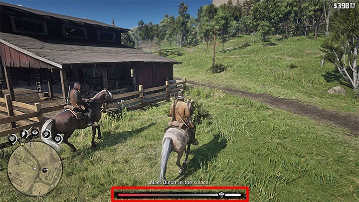
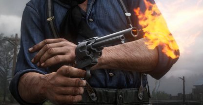
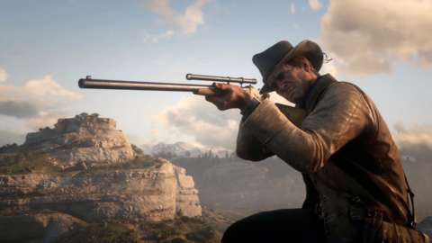
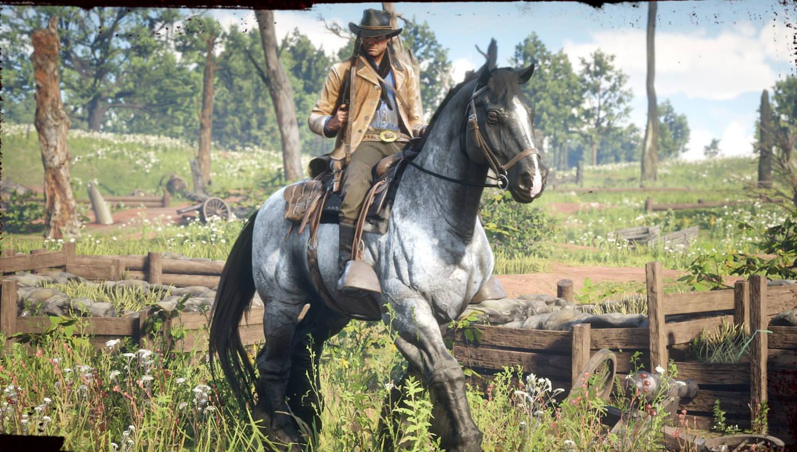

General
In this section, we hope to shine light on the under looked mechanics in the game, whether it be due to the lack of tutorials on a topic, or to clarify details that have been overlooked by the general audience.

Image provided from IGN.com
When Arthur has a revolver equipped in his hand, the button to holster it is L1, on PS4, or LB, on Xbox One. Along with the usual holster animation, there is a twirl you can perform on your sidearms by simply double-tapping the holster button. However, this can only work with revolvers on the side-holster, not the front holster, as shown above.

Image provided from GamePressure.com
The in-game honor system is more than a simple bar displaying how good or bad you act in the game. Depending on your current position on the bar, the game makes subtle changes to the world around you. Such as being given store discounts in towns, if your honor is high, or everyone in town giving you dirty looks when you ride in if it's low. The honor system can even change the playout of cutscenes for the story, and can determine the ending.

Image provided from Youtube.com
When Arthur has his sidearm holstered, you can manually enter into a quickdraw mode whenever, as long as the dead eye core is not drained. You can perform this by slightly pulling R2, on PS4, or RT, on Xbox One, when your gun is holstered, which will then slowly enter into dead eye, allowing you to map targets before you draw.

Image provided from VGR.com
At first, you may mistake the 'wrap' gun upgrade as just a cosmetic option for your gun, when in fact it's much more. When the wrap is applied to a gun, it reduces the rate at which the gun degrades, resulting in less micro-managing for the player.

Image provided from VG247.com
When approaching behind horses there is a possibility of it kicking you if it gets close. A method to tell between calm and irritated horses is to study their ears. If they're standing up, they are safe to approach, if not, tread lightly.